Conic Sections in Polar Coordinates
Most of us are familiar with orbital motion, such as the motion of a planet around the sun or an electron around an atomic nucleus. Within the planetary system, orbits of planets, asteroids, and comets around a larger celestial body are often elliptical. Comets, however, may take on a parabolic or hyperbolic orbit instead. And, in reality, the characteristics of the planets’ orbits may vary over time. Each orbit is tied to the location of the celestial body being orbited and the distance and direction of the planet or other object from that body. As a result, we tend to use polar coordinates to represent these orbits.
In an elliptical orbit, the periapsis is the point at which the two objects are closest, and the apoapsis is the point at which they are farthest apart. Generally, the velocity of the orbiting body tends to increase as it approaches the periapsis and decrease as it approaches the apoapsis. Some objects reach an escape velocity, which results in an infinite orbit. These bodies exhibit either a parabolic or a hyperbolic orbit about a body; the orbiting body breaks free of the celestial body’s gravitational pull and fires off into space. Each of these orbits can be modeled by a conic section in the polar coordinate system.
Identifying a Conic in Polar Form
Any conic may be determined by three characteristics: a single focus, a fixed line called the directrix, and the ratio of the distances of each to a point on the graph. Consider the parabola shown in Figure 2.

In The Parabola, we learned how a parabola is defined by the focus (a fixed point) and the directrix (a fixed line). In this section, we will learn how to define any conic in the polar coordinate system in terms of a fixed point, the focus at the pole, and a line, the directrix, which is perpendicular to the polar axis.
If is a fixed point, the focus, and is a fixed line, the directrix, then we can let be a fixed positive number, called the eccentricity, which we can define as the ratio of the distances from a point on the graph to the focus and the point on the graph to the directrix. Then the set of all points such that is a conic. In other words, we can define a conic as the set of all points with the property that the ratio of the distance from to to the distance from to is equal to the constant
For a conic with eccentricity
- if the conic is an ellipse
- if the conic is a parabola
- if the conic is an hyperbola
With this definition, we may now define a conic in terms of the directrix, the eccentricity and the angle Thus, each conic may be written as a polar equation, an equation written in terms of and
Identifying a Conic Given the Polar Form
For each of the following equations, identify the conic with focus at the origin, the directrix, and the eccentricity.
Solution
For each of the three conics, we will rewrite the equation in standard form. Standard form has a 1 as the constant in the denominator. Therefore, in all three parts, the first step will be to multiply the numerator and denominator by the reciprocal of the constant of the original equation, where is that constant.
- Multiply the numerator and denominator by
Because is in the denominator, the directrix is Comparing to standard form, note that Therefore, from the numerator,
Since the conic is an ellipse. The eccentricity is and the directrix is
- Multiply the numerator and denominator by
Because is in the denominator, the directrix is Comparing to standard form, Therefore, from the numerator,
Since the conic is a hyperbola. The eccentricity is and the directrix is
- Multiply the numerator and denominator by
Because sine is in the denominator, the directrix is Comparing to standard form, Therefore, from the numerator,
Because the conic is a parabola. The eccentricity is and the directrix is
Graphing the Polar Equations of Conics
When graphing in Cartesian coordinates, each conic section has a unique equation. This is not the case when graphing in polar coordinates. We must use the eccentricity of a conic section to determine which type of curve to graph, and then determine its specific characteristics. The first step is to rewrite the conic in standard form as we have done in the previous example. In other words, we need to rewrite the equation so that the denominator begins with 1. This enables us to determine and, therefore, the shape of the curve. The next step is to substitute values for and solve for to plot a few key points. Setting equal to and provides the vertices so we can create a rough sketch of the graph.
Graphing a Parabola in Polar Form
Graph
Solution
First, we rewrite the conic in standard form by multiplying the numerator and denominator by the reciprocal of 3, which is
Because we will graph a parabola with a focus at the origin. The function has a and there is an addition sign in the denominator, so the directrix is
The directrix is
Plotting a few key points as in Table 1 will enable us to see the vertices. See Figure 3.
| A | B | C | D | |
|---|---|---|---|---|
| undefined |
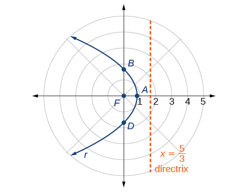
Graphing a Hyperbola in Polar Form
Graph
Solution
First, we rewrite the conic in standard form by multiplying the numerator and denominator by the reciprocal of 2, which is
Because so we will graph a hyperbola with a focus at the origin. The function has a term and there is a subtraction sign in the denominator, so the directrix is
The directrix is
Plotting a few key points as in Table 2 will enable us to see the vertices. See Figure 5.
| A | B | C | D | |
|---|---|---|---|---|

Graphing an Ellipse in Polar Form
Graph
Solution
First, we rewrite the conic in standard form by multiplying the numerator and denominator by the reciprocal of 5, which is
Because so we will graph an ellipse with a focus at the origin. The function has a and there is a subtraction sign in the denominator, so the directrix is
The directrix is
Plotting a few key points as in Table 3 will enable us to see the vertices. See Figure 6.
| A | B | C | D | |
|---|---|---|---|---|
![A horizontal ellipse is shown in a polar coordinate system, centered on the Polar Axis to the right of the Pole. The Vertices are on the Polar Axis. The right Vertex is labeled A and the left Vertex is labeled C and is to the left of the Pole. Point A is on the Polar Axis at r = 10. The Polar Axis tick marks are labeled 2, 4, 6, 8, 10, 12. The upper and lower points where the ellipse intersects the vertical axis through the Pole are labeled B and D respectively. The Directrix, the vertical line x = negative 5/2, is shown.](../../media/CNX_Precalc_Figure_10_05_006.jpg)
Analysis
We can check our result using a graphing utility. See Figure 7.
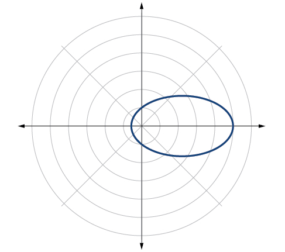
Defining Conics in Terms of a Focus and a Directrix
So far we have been using polar equations of conics to describe and graph the curve. Now we will work in reverse; we will use information about the origin, eccentricity, and directrix to determine the polar equation.
Finding the Polar Form of a Vertical Conic Given a Focus at the Origin and the Eccentricity and Directrix
Find the polar form of the conic given a focus at the origin, and directrix
Solution
The directrix is so we know the trigonometric function in the denominator is sine.
Because so we know there is a subtraction sign in the denominator. We use the standard form of
and and
Therefore,
Finding the Polar Form of a Horizontal Conic Given a Focus at the Origin and the Eccentricity and Directrix
Find the polar form of a conic given a focus at the origin, and directrix
Solution
Because the directrix is we know the function in the denominator is cosine. Because so we know there is an addition sign in the denominator. We use the standard form of
and and
Therefore,
Converting a Conic in Polar Form to Rectangular Form
Convert the conic to rectangular form.
Solution
We will rearrange the formula to use the identities
Key Concepts
- Any conic may be determined by a single focus, the corresponding eccentricity, and the directrix. We can also define a conic in terms of a fixed point, the focus at the pole, and a line, the directrix, which is perpendicular to the polar axis.
- A conic is the set of all points where eccentricity is a positive real number. Each conic may be written in terms of its polar equation. See Example 1.
- The polar equations of conics can be graphed. See Example 2, Example 3, and Example 4.
- Conics can be defined in terms of a focus, a directrix, and eccentricity. See Example 5 and Example 6.
- We can use the identities and to convert the equation for a conic from polar to rectangular form. See Example 7.
Section Exercises
Verbal
Explain how eccentricity determines which conic section is given.
Solution
If eccentricity is less than 1, it is an ellipse. If eccentricity is equal to 1, it is a parabola. If eccentricity is greater than 1, it is a hyperbola.
If a conic section is written as a polar equation, what must be true of the denominator?
If a conic section is written as a polar equation, and the denominator involves what conclusion can be drawn about the directrix?
Solution
The directrix will be parallel to the polar axis.
If the directrix of a conic section is perpendicular to the polar axis, what do we know about the equation of the graph?
What do we know about the focus/foci of a conic section if it is written as a polar equation?
Solution
One of the foci will be located at the origin.
Algebraic
For the following exercises, identify the conic with a focus at the origin, and then give the directrix and eccentricity.
Solution
Parabola with and directrix units below the pole.
Solution
Hyperbola with and directrix units above the pole.
Solution
Parabola with and directrix units to the right of the pole.
Solution
Ellipse with and directrix units to the right of the pole.
Solution
Hyperbola with and directrix units above the pole.
Solution
Hyperbola with and directrix units to the right of the pole.
For the following exercises, convert the polar equation of a conic section to a rectangular equation.
Solution
Solution
Solution
Solution
Solution
Solution
For the following exercises, graph the given conic section. If it is a parabola, label the vertex, focus, and directrix. If it is an ellipse, label the vertices and foci. If it is a hyperbola, label the vertices and foci.
Solution
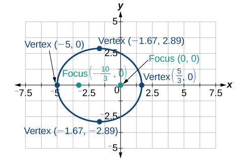
Solution
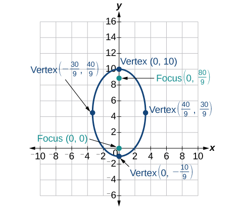
Solution
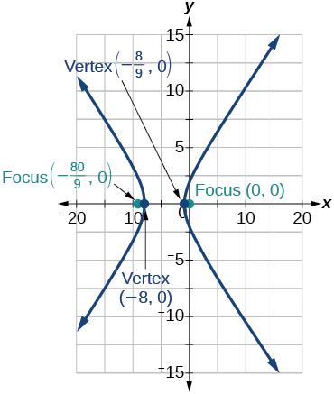
Solution
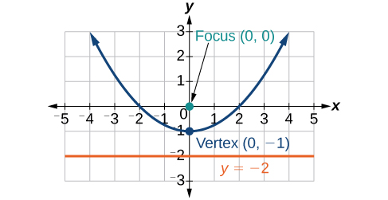
Solution
![A graph of a parabola is shown on a coordinate plane. The x-axis extends from -16 to 10, and the y-axis extends from -16 to 16. The parabola opens to the left, passing through the origin of the y-axis at approximately y=4.47 and y=-4.47, and through the x-axis at 5/2 (which is 2.5). The focus of the parabola is a green dot located at the origin (0,0) and labeled "Focus (0, 0)". The vertex of the parabola is a blue dot located at (5/2, 0) and labeled "Vertex (5/2, 0)". The directrix of the parabola is a vertical orange line at x=5, labeled "x = 5".](../../media/CNX_Precalc_Figure_10_05_209.jpg)
Solution
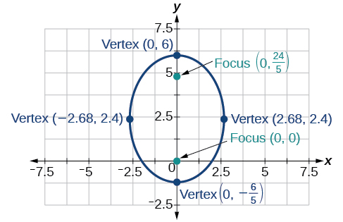
For the following exercises, find the polar equation of the conic with focus at the origin and the given eccentricity and directrix.
Directrix:
Solution
Directrix:
Directrix:
Solution
Directrix:
Directrix:
Solution
Directrix:
Directrix:
Solution
Directrix:
Directrix:
Solution
Directrix:
Directrix:
Solution
Directrix:
Directrix:
Solution
Extensions
Recall from Rotation of Axes that equations of conics with an term have rotated graphs. For the following exercises, express each equation in polar form with as a function of
Solution
Solution
Chapter Review Exercises
The Ellipse
For the following exercises, write the equation of the ellipse in standard form. Then identify the center, vertices, and foci.
Solution
center: vertices: foci:
Solution
For the following exercises, graph the ellipse, noting center, vertices, and foci.
Solution
center: vertices: foci:
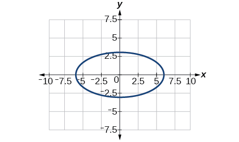
Solution
center: vertices: foci:
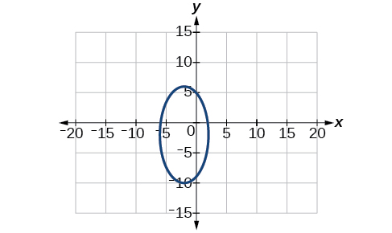
For the following exercises, use the given information to find the equation for the ellipse.
Center at focus at vertex at
Solution
Center at vertex at focus at
A whispering gallery is to be constructed such that the foci are located 35 feet from the center. If the length of the gallery is to be 100 feet, what should the height of the ceiling be?
Solution
Approximately 35.71 feet
The Hyperbola
For the following exercises, write the equation of the hyperbola in standard form. Then give the center, vertices, and foci.
Solution
center: vertices: foci:
Solution
center: vertices: foci:
For the following exercises, graph the hyperbola, labeling vertices and foci.
Solution
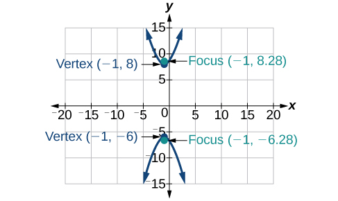
Solution
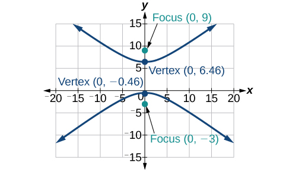
For the following exercises, find the equation of the hyperbola.
Center at vertex at focus at
Foci at and vertex at
Solution
The Parabola
For the following exercises, write the equation of the parabola in standard form. Then give the vertex, focus, and directrix.
Solution
vertex: focus: directrix:
Solution
vertex: focus: directrix:
For the following exercises, graph the parabola, labeling vertex, focus, and directrix.
Solution
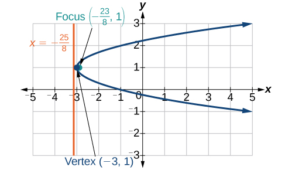
Solution
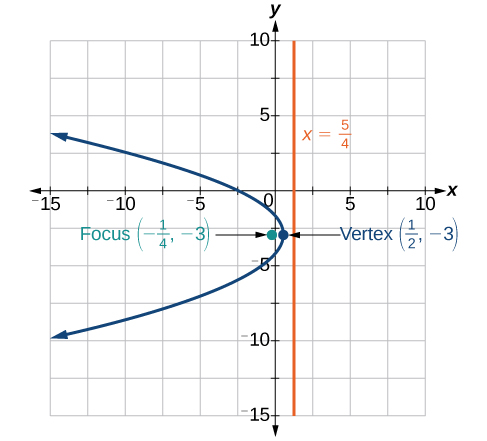
For the following exercises, write the equation of the parabola using the given information.
Focus at directrix is
Focus at directrix is
Solution
A cable TV receiving dish is the shape of a paraboloid of revolution. Find the location of the receiver, which is placed at the focus, if the dish is 5 feet across at its opening and 1.5 feet deep.
Rotation of Axes
For the following exercises, determine which of the conic sections is represented.
Solution
parabola
Solution
ellipse
For the following exercises, determine the angle that will eliminate the term, and write the corresponding equation without the term.
Solution
For the following exercises, graph the equation relative to the system in which the equation has no term.
Solution

Conic Sections in Polar Coordinates
For the following exercises, given the polar equation of the conic with focus at the origin, identify the eccentricity and directrix.
Solution
Hyperbola with and directrix units to the left of the pole.
Solution
Ellipse with and directrix unit above the pole.
For the following exercises, graph the conic given in polar form. If it is a parabola, label the vertex, focus, and directrix. If it is an ellipse or a hyperbola, label the vertices and foci.
Solution
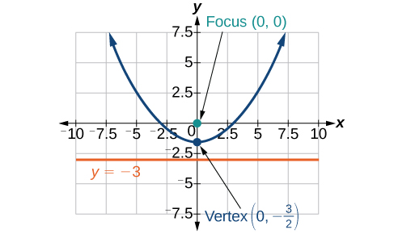
Solution
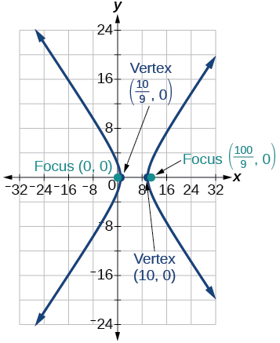
For the following exercises, given information about the graph of a conic with focus at the origin, find the equation in polar form.
Directrix is and eccentricity
Solution
Directrix is and eccentricity
Practice Test
For the following exercises, write the equation in standard form and state the center, vertices, and foci.
Solution
center: vertices: foci:
For the following exercises, sketch the graph, identifying the center, vertices, and foci.
Solution
center: vertices: foci:
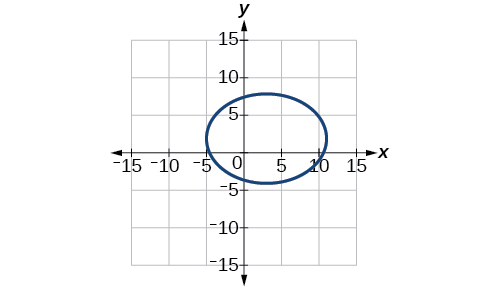
Write the standard form equation of an ellipse with a center at vertex at and focus at
Solution
A whispering gallery is to be constructed with a length of 150 feet. If the foci are to be located 20 feet away from the wall, how high should the ceiling be?
For the following exercises, write the equation of the hyperbola in standard form, and give the center, vertices, foci, and asymptotes.
Solution
center: vertices foci: asymptotes:
For the following exercises, graph the hyperbola, noting its center, vertices, and foci. State the equations of the asymptotes.
Solution
center: vertices: foci: asymptotes:
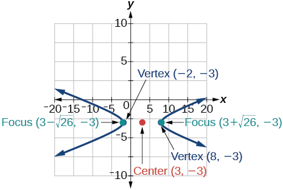
Write the standard form equation of a hyperbola with foci at and and a vertex at
Solution
For the following exercises, write the equation of the parabola in standard form, and give the vertex, focus, and equation of the directrix.
Solution
vertex: focus: directrix:
For the following exercises, graph the parabola, labeling the vertex, focus, and directrix.
Solution

Write the equation of a parabola with a focus at and directrix
A searchlight is shaped like a paraboloid of revolution. If the light source is located 1.5 feet from the base along the axis of symmetry, and the depth of the searchlight is 3 feet, what should the width of the opening be?
Solution
Approximately feet
For the following exercises, determine which conic section is represented by the given equation, and then determine the angle that will eliminate the term.
Solution
parabola;
For the following exercises, rewrite in the system without the term, and graph the rotated graph.
Solution
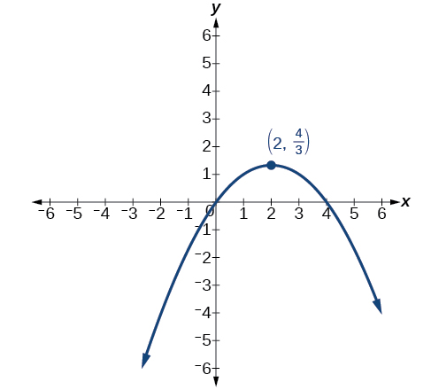
For the following exercises, identify the conic with focus at the origin, and then give the directrix and eccentricity.
Solution
Hyperbola with and directrix units to the right of the pole.
For the following exercises, graph the given conic section. If it is a parabola, label vertex, focus, and directrix. If it is an ellipse or a hyperbola, label vertices and foci.
Solution
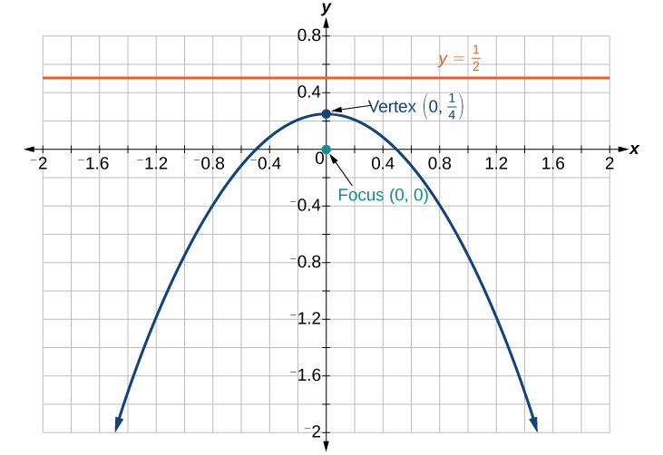
Find a polar equation of the conic with focus at the origin, eccentricity of and directrix:
Analysis
We can check our result with a graphing utility. See Figure 4.
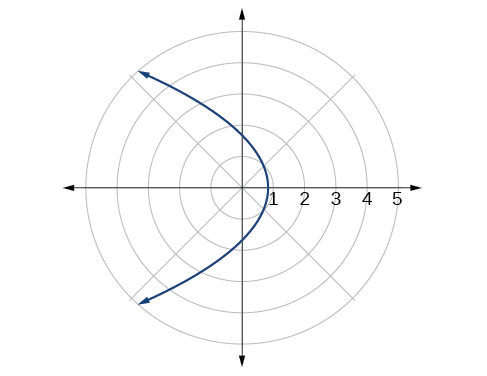